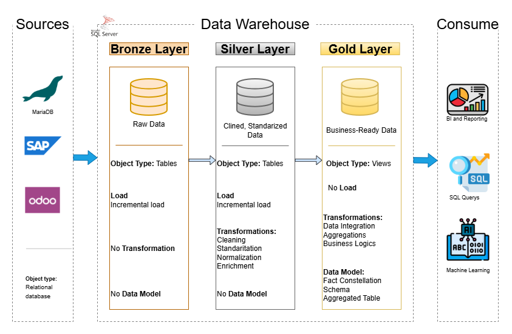
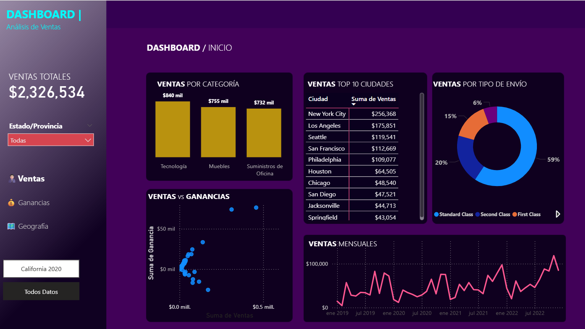

Roman López
Data Engineer · Data Architecture · Business Intelligence
About Me
Data Engineer specializing in scalable data architectures, ETL/ELT pipelines, and data warehousing. I design and implement robust data pipelines, dimensional and analytical data models, and centralized data platforms that transform raw data into high-quality, structured datasets for analytics and business intelligence. My expertise includes data integration, automation, streamlining data workflows, and ensuring reliable, performant, and maintainable data solutions to support data-driven decision making across organizations.
Featured Projects

SQL Data Warehouse Architecture
Design and implementation of a SQL Server Data Warehouse using a Medallion Architecture (Bronze, Silver, Gold) to centralize and structure data from multiple systems.
SQL Server · Data Warehouse · ETL · Data Modeling View Project
Order Pool Monitoring Dashboard
Operational Power BI dashboard designed to monitor orders placed in the credit hold pool, identify blocking reasons and improve order processing efficiency.
Power BI · SQL Server · Business Intelligence View Project
Sales Profitability Analysis
Business analysis project focused on identifying the most profitable products, regions and opportunities to improve sales performance using Power BI dashboards.
Power BI · CSV · Data Analysis View Project